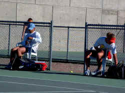
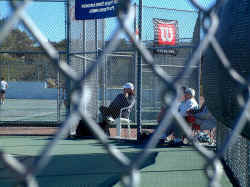
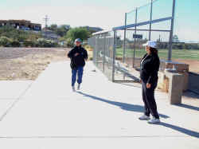
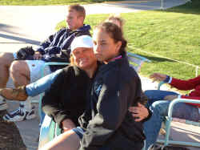

|
Neither Shakespeare or Bob Dylan had the Tucson winds in mind
when they recorded their thoughts on the blow. Lizzie's first
match on Copper Bowl Day Three was once again at the Foothills
High School, but Mother Nature had transformed the courts into
a nightmare wind tunnel. Winds were pretty steady between 35
and 50 mph. Hello, try tossing up the ball for a serve in that
atmosphere. Points were brutal. Footwork often meant the
difference between poking the ball into the net or driving
your opponent crazy with a high ball twisted across the court
with torturous malice.
 |
Liz
and Lauren Imre battled the wind and each other. |
Liz lost the first set in a tough tie-break after being up
5-3. Imre teamed up with the wind to comeback and go up to a
4-2 lead in the third set. Imre's big serve broke through the
wind regularly and her overheads pounded against the back
wall. Liz dug deep, slicing backhands low to the tall Imre.
Lots of spin in the wind made misery for Imre. Liz came back
to win the second set 6-4. In the third set. Imre came out
determined to neutralize the wind with brute force. She
pounded every ball, but could not put enough into the court.
Liz kept her cool as the wind did not let up. Her cool
translated into a third set 6-2 victory in almost three hours.
Dad and Mom were thoroughly wind-burned. That's right, the
wind accomplished what the sun couldn't.
 |
|
Dorothy
sitting in the wind watching intently. What, me nervous? |
|
|
There was not much time to rest after the hard fought victory
against Imre. The luck of the draw can be such a force in
these tournaments. Liz's opponent next opponent, Colleen Reilly,
was on the court for less than an hour in a 6-0, 6-1 victory.
We asked the tournament director was an hour and a half break
after the Imre match, but he insisted on an hour. That meant
rushing to a nearby Burger King to chicken up while driving to
the Reilly match a the La Paloma Country Club. We sure were
happy to leave the winds of the Foothills High School behind.
 |
|
Liz
does warm-up sprints before her match as Dorothy eggs
her on. |
| Liz
had played Colleen Reilly at the 12s Clay Court
Nationals in the quarterfinals and beat her in three
sets. The winds were subdued at the beautiful La Paloma
Country Club as the two girls took the court in the
early afternoon. Liz took command from the get-go,
overpowering Colleen with forehands and backhands.
Colleen is a fighter and klept it close 6-3 in the first
set. Liz came out strong in the second set and went out
to a 4-2 lead, but Reilly battled back, coming to net on
a number of shots and pressuring Liz into some mistakes.
Deep into the set Liz grew a bit tentative, but pulled
it together for a 6-4 win in the second and a place in
her second straight National quarterfinals.

|
| Relaxing
after the Reilly match. |
No elegant dinners tonight. Liz was blown around the court so
much all she wanted was a video rental and dinner in the
condo. We picked out Loser in Blockbuster. What a mistake. A
boring movie, not very funny and it sat on its sentiment. We
made a chopped Caesar salad for dinner with fresh tuna and
wild mushrooms. Not bad for condo cooking on the road.
|